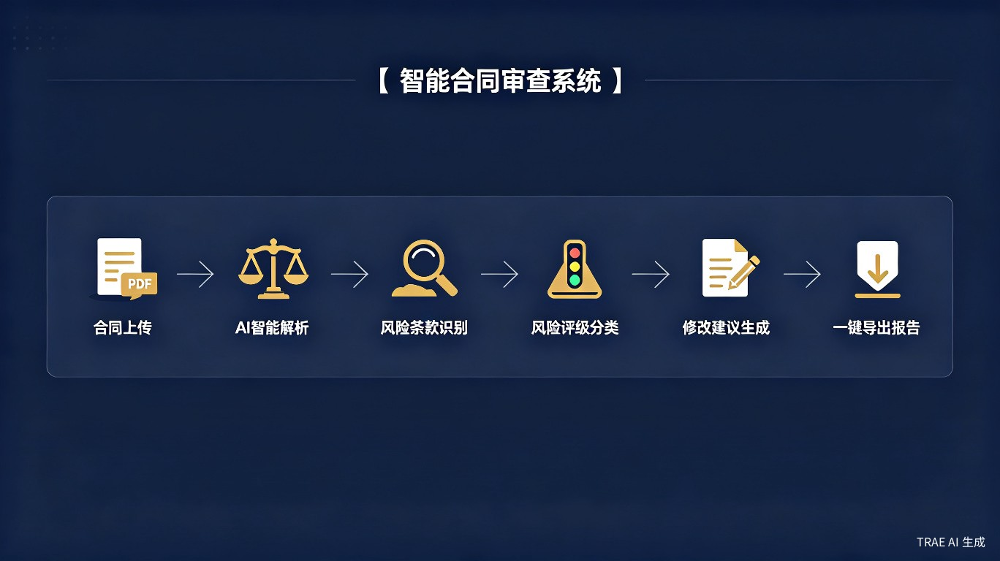
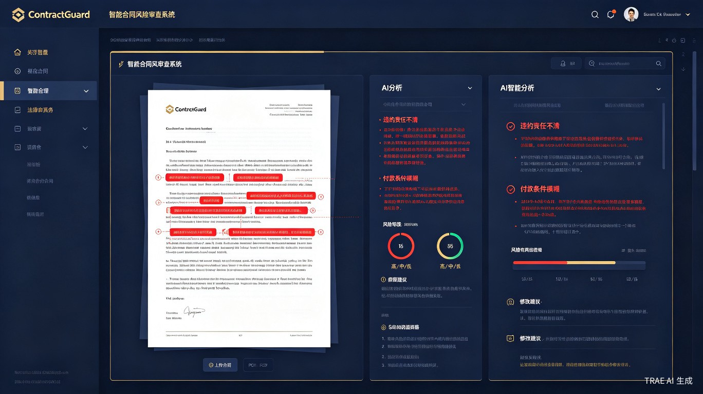

用 AI 解决合同审查的低效与盲区问题
想解决什么问题：企业合同审查依赖人工逐条阅读，耗时耗力且容易遗漏风险条款，一份中等复杂度的合同审查平均需要 4-6 小时，而 73% 的合同纠纷源于审查阶段未发现的风险点。
灵感来源于一位法务朋友的真实困境：他的团队每月需要审查超过 200 份合同，平均每人每天工作 10 小时仍无法完成全部审查。更致命的是，去年公司因一份"违约责任条款模糊"的采购合同损失了 80 万元——这个风险点本可以在签署前被发现。人工审查的瓶颈不在于专业能力，而在于人的精力和注意力有限。
ContractGuard 是一款面向企业法务团队和律师事务所的 AI 智能合同审查系统。用户上传合同文档（PDF/Word）后，系统在 3 分钟内完成全量风险扫描，自动识别高风险条款、缺失条款和不利条款，并给出修改建议和法规依据。产品形态为 SaaS 网页平台，同时提供企业 API 接口，可与 OA、ERP 系统无缝集成。

图 1：ContractGuard 核心功能流程——从上传到风险报告的全自动闭环
谁需要这个产品，他们在什么场景下使用
核心用户群体
企业法务团队
日均审查合同量大，时间紧迫，需要快速定位风险点
律师事务所
合同审查是基础性业务，AI 可释放律师精力聚焦高价值工作
商务 / 采购人员
非法律专业出身，签署前需要快速了解合同风险
中小企业主
没有专职法务，合同风险意识薄弱，亟需低成本审查工具
典型使用场景
场景一：大型采购合同审查。某制造企业法务部收到一份 58 页的供应商采购合同。传统方式需要法务专员花费 6 小时逐条审查。使用 ContractGuard，上传合同后 3 分钟，系统自动标出 12 处风险点：其中 3 处高风险（违约金条款不对等、知识产权归属不明、争议解决地约定不利），并给出逐条修改建议和对应法规依据。
场景二：批量合同初筛。一家连锁零售企业每月需签署 500+ 份加盟合同。法务团队使用 ContractGuard 的批量审查功能，一次性上传全部合同，系统自动完成初筛，仅将存在中高风险的 15% 合同推送给法务人工复核，审查效率提升 6 倍。
场景三：商务人员自助审查。销售经理小张收到客户发来的合作协议，在提交法务前先用 ContractGuard 扫描一遍，发现"付款账期"条款从 30 天被修改为 90 天。他立即与客户沟通修改，避免了后续现金流风险。
当前痛点
人工审查一份合同平均耗时 4-6 小时，复杂合同可达 2-3 天；审查质量高度依赖个人经验，新人法务遗漏风险的概率是老员工的 3 倍；73% 的合同纠纷源于签署前未发现的风险条款；中小企业因无专职法务，超过 60% 的合同未经专业审查直接签署。
商业价值与社会价值的双重实现
商业价值
中国法律科技市场正处于高速增长期，2024 年市场规模已突破 800 亿元。ContractGuard 采用 分级订阅 + 按量计费 的商业模式：基础版（适合中小企业）月费 299 元，支持每月 20 份合同审查；专业版（适合中型企业）月费 1999 元，支持 200 份合同 + API 接口；企业版按实际用量计费。以 10 万企业客户、平均客单价 5000 元/年计算，潜在市场规模超过 50 亿元。
效率提升价值
传统合同审查平均耗时 4-6 小时/份，ContractGuard 将初筛时间压缩至 3 分钟/份，效率提升超过 100 倍。更重要的是，AI 不会疲劳、不受情绪影响，对标准风险条款的识别准确率可达 95% 以上，远超人工审查的一致性。据测算，一家年审 2000 份合同的中型企业，使用 ContractGuard 后每年可节省约 4800 小时的法务人力成本，折合 60 万元以上。
社会价值
合同风险意识的普及是产品的重要社会价值。大量中小企业因缺乏法务资源，长期在"裸签"状态下经营，一旦发生纠纷往往面临巨额损失。ContractGuard 以极低成本（每月数百元）为中小企业提供原本只有大型企业才能享有的专业合同审查能力，让法律风险管理从"奢侈品"变成"日用品"。此外，系统内置的法规库和判例库持续更新，帮助用户及时了解最新法律变化，提升全社会的契约合规水平。
图 2：法务人员使用 ContractGuard 高效审查合同的专业场景
核心功能模块与技术实现

图 3：ContractGuard 产品界面概念图——左侧合同预览，右侧 AI 风险分析面板
核心功能列表
- 智能文档解析：支持 PDF、Word、图片格式合同上传，自动提取文本并结构化解析条款（OCR 准确率 98%+）
- 风险条款识别：基于法律知识图谱，自动识别 80+ 类常见风险条款（违约责任、知识产权、保密义务、争议解决等）
- 风险等级评定：每条风险自动标注等级 高风险 中风险 低风险，并说明风险原因
- 缺失条款检测：根据合同类型自动检查必备条款是否缺失（如劳动合同需包含社保条款、租赁合同需包含维修责任条款）
- 智能修改建议：针对每条风险，提供基于法规依据和最佳实践的修改建议，支持一键替换
- 批量审查与对比：支持多份合同批量上传，支持合同版本对比（追踪修改内容）
- 审查报告导出：一键生成 PDF/Word 格式的专业审查报告，可直接提交给客户或上级
技术架构
| 技术层 | 技术方案 | 作用 |
|---|---|---|
| 文档解析 | OCR + 版面分析 + 结构化抽取 | 将非结构化合同转为可分析数据 |
| 自然语言处理 | LLM（大语言模型）+ 法律领域微调 | 理解合同语义，识别风险条款 |
| 知识图谱 | Neo4j + 法规/判例/合同模板库 | 构建法律概念关联网络 |
| 风险模型 | 规则引擎 + 机器学习分类 | 多维度风险识别与评级 |
| 前端平台 | React + TypeScript | 高交互 SaaS 界面 |
| 企业集成 | REST API + Webhook | 与 OA/ERP/电子签章系统对接 |
差异化竞争优势
| 产品/方式 | 核心方式 | 局限性 | 我们的优势 |
|---|---|---|---|
| 人工法务审查 | 专业律师逐条审核 | 耗时、成本高、一致性差 | 3 分钟完成初筛，成本降低 90% |
| 传统合同模板 | 固定模板填充 | 无法应对非标合同，无风险识别 | 任意合同均可审查，智能识别风险 |
| 国外产品（Kira等） | AI 合同分析 | 适配中国法律体系不足，价格高昂 | 本土化法规库，性价比高 |
| 通用文档 AI | 通用 NLP 分析 | 缺乏法律领域知识，误报率高 | 法律垂直领域深度优化 |
从 MVP 到法律科技生态的演进路径
第一阶段（1-3个月）
MVP 版本：支持劳动合同、采购合同两类模板，核心功能为风险识别 + 修改建议
第二阶段（3-6个月）
扩展合同类型至 20+ 类，上线批量审查、版本对比、报告导出功能
第三阶段（6-12个月）
企业 API 开放、与主流 OA/电子签章平台集成、定制化风险规则引擎
第四阶段（12个月+）
合同全生命周期管理（起草-审查-签署-履约监控）、智能谈判辅助